| 日付 | 2026年5月10日（日） |
|---|---|
| 山域 | 丹沢 |
| メンバー | 単独 |
| 山行形態 | 日帰り |
| アクセス | 車 |
| ルート (Map) | ゲート (6:59) - (7:43) 造林小屋 - (9:19) 早戸大滝 - (10:50) 主脈稜線分岐 - (11:33) 蛭ヶ岳 - (12:21) 主脈稜線分岐 - (12:40) 丹沢山 - (13:50) 本間ノ頭 - (14:56) 本間橋 - (15:11) ゲート |
以前から、一度は行ってみたかった早戸大滝。
登山道は荒れているようだが、立ち入っている人はチラホラいそう。
往復登山は嫌なので、そのまま南の尾根から丹沢山に登り、
本間ノ頭から戻ってくる周回ルートを歩くことにする。
車道の通行止めのところまで行って車を停める。標高510m。
既に4台停まっていて、なんとか1台分のスペースに停める。
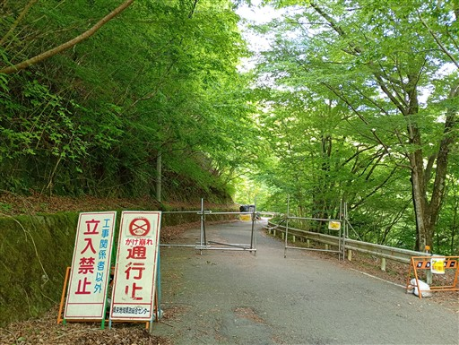
まずは車道歩き。電柱が途中で折れている。
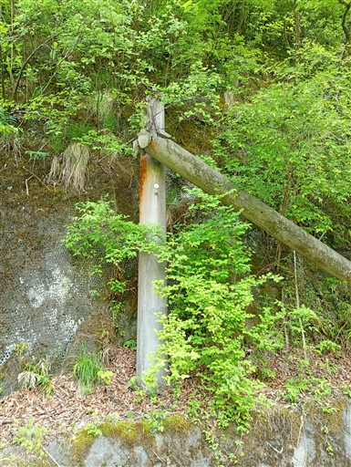
魚止橋。ここから舗装路ではなくなる。
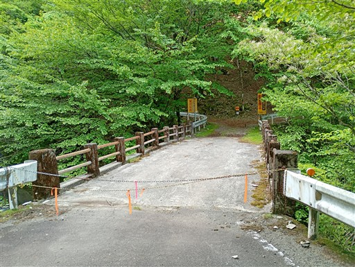
車道を離れてリボンが付いている道を行く。
こちらの方がショートカットになりそうだ。
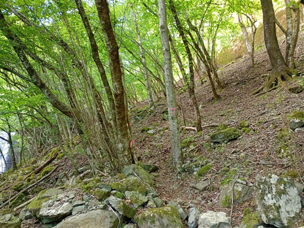
車道に復帰したところは荒れた林道。もう車で通るのは困難そうだ。
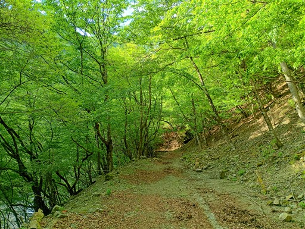
遥か昔の情報、と思ったら令和8年と書かれている。
意外に今でも整備されているのか。
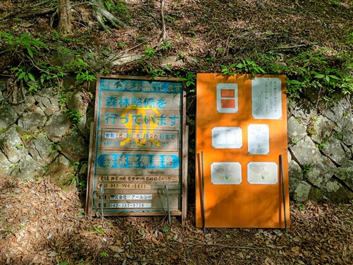
壊れかけた造林小屋。
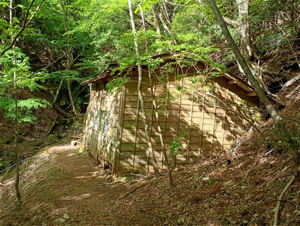
内部はだいぶ傾いている。壁に落書きがある。
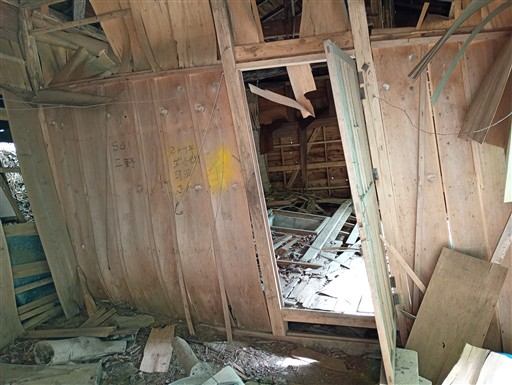
道がトラバース道になる。かなり細めの道だ。
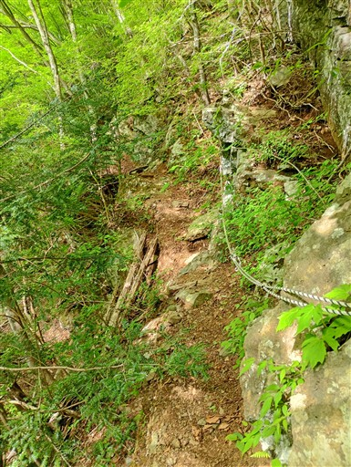
この段差はちょっときつい。足場も悪そうで、慎重に通過。
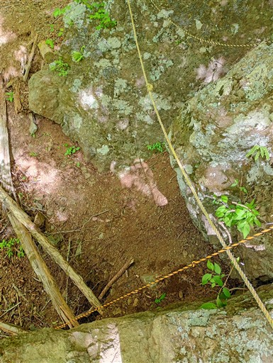
そして突如として現れる丸太の一本橋。本山行の核心部。
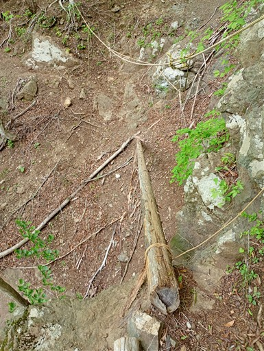
渡った場所から撮影。ロープがあり、テンションがかかっているので、見た目ほど難しくはない。
とはいえ、かなり緊張を要する場所。
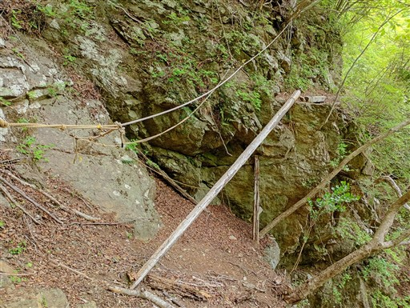
川沿いに下りる道と、斜面を登る道に分かれる。左の下りる道を選択。
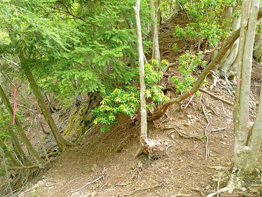
河原に下りてくる。
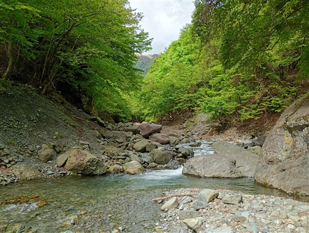
ここで川を渡渉。水量はそこまで多くないが、濡れると嫌なので念のため靴を脱いで渡る。
水はとても冷たく、この距離を渡るのでも結構辛い。
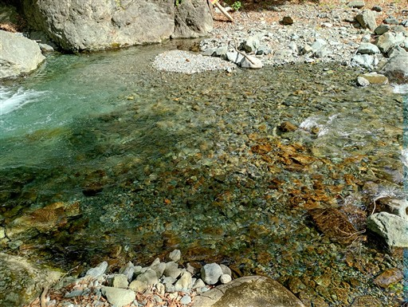
釣り師が水にジャブジャブ入りながら釣りをしている。
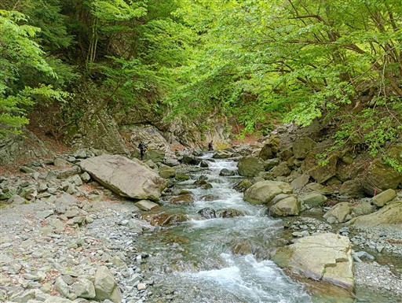
第二の渡渉ポイント。
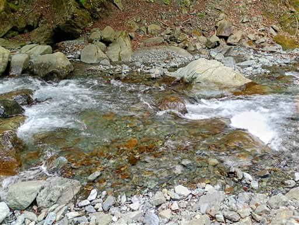
続けてすぐに第三の渡渉ポイント。写真のちょっと右の浅瀬を渡る。
二度連続で渡渉するなら、川沿いをへつった方が良かったか？
時間がかかってしょうがない。
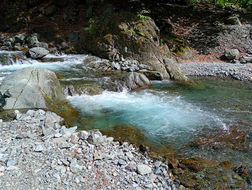
この辺りに来ると川が細くなり、水の流れが障害ではなくなる。
河原を歩いて行って問題なさそうだ。
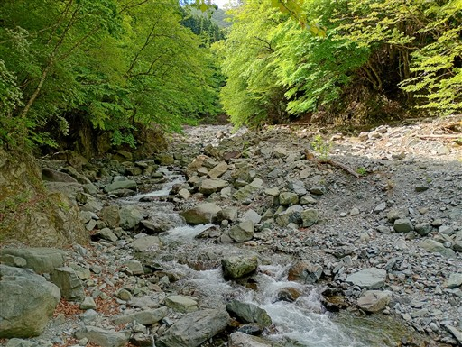
川沿いにある謎の祠。
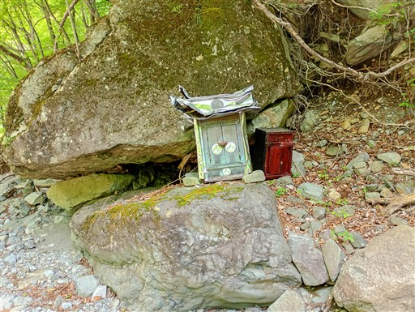
早戸大滝に到着。落差50mの立派な滝だが、はっきりとは見えない。
半分岩に隠れている特殊な形なのと、これ以上は近づけないため。
もうちょっと近づけそうだが、滝壺までいくのはリスクが高そうだ。
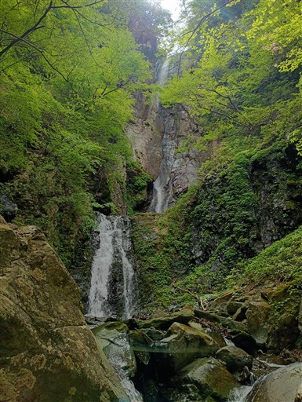
滝の側を登る道があるので行ってみる。
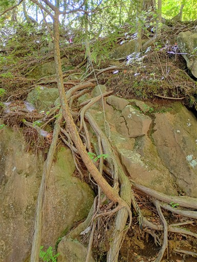
ここからも早戸大滝が見えるが、やはりきれいには見渡せない。
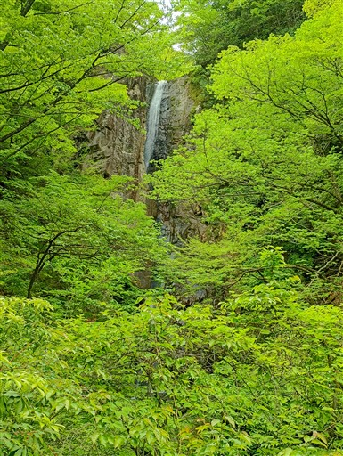
ちょっと脆い岩場を下りて、滝の落ち口へ。
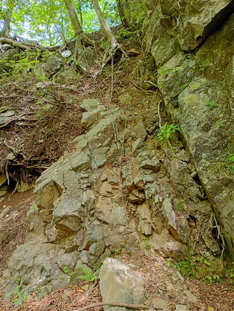
早戸大滝の落ち口。ちょっと樹木が邪魔。
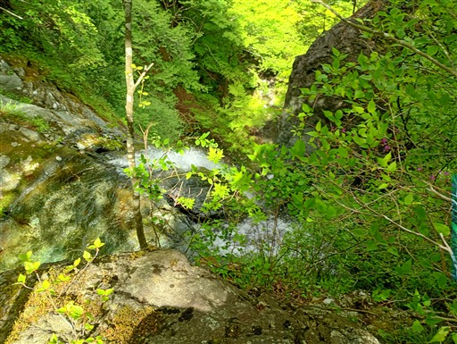
ここから、何も考えずにロープがあった尾根を登り始めてしまう。
こちらは瀬戸沢ノ頭に至る道で間違い。またアホなことをやってしまった。
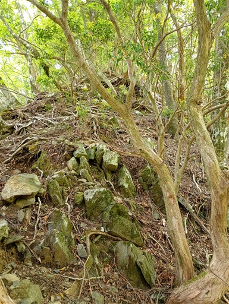
こちらが正しい道。尾根というかただの急斜面。
そこに長い長いロープが垂れ下がっている。
右側から回り込んだ方が登りやすそうに見えたが、ロープにつかまって直登する。
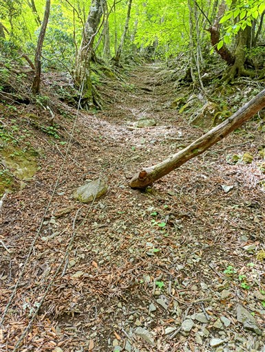
ロープから解放されると、だいぶ歩きやすい尾根になる。
アセビの木が結構多めだ。
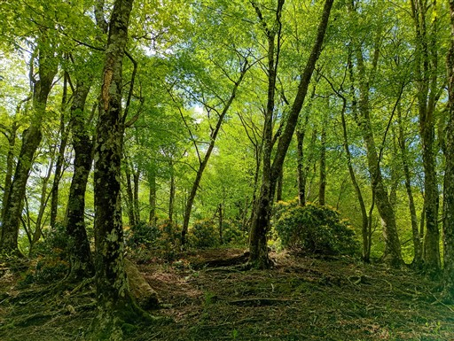
ところどころで大木が見られる。
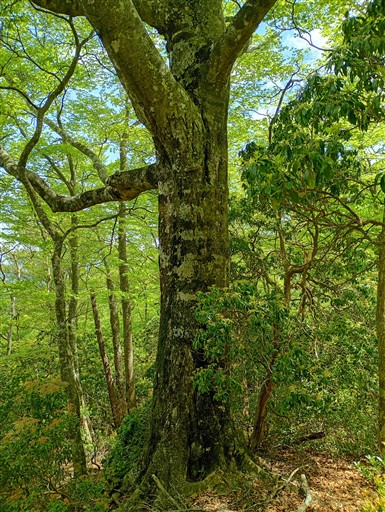
緑に包まれた樹林帯。踏み跡は薄いが、藪が無いので快適だ。
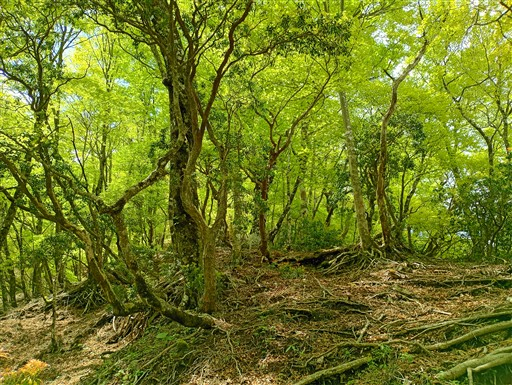
鹿柵が出てきた。こうやって植生を保護しているようだ。
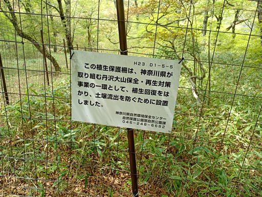
傾斜が緩んで広々とした尾根になる。気持ちの良い場所だ。
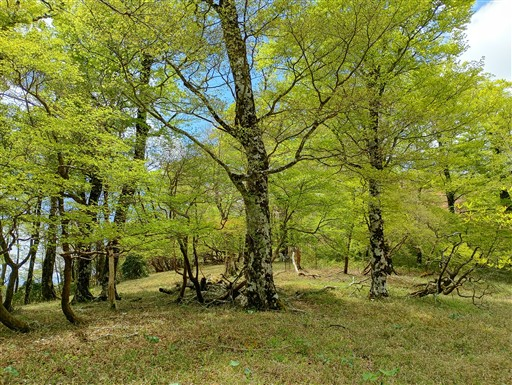
順調に登っていく。視界が広がる場所も出てくる。
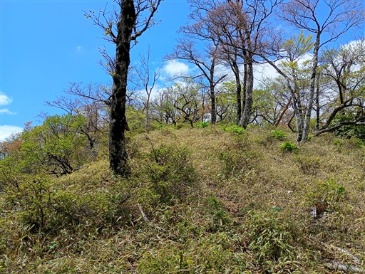
左手にはこれから目指す丹沢山が聳えている。
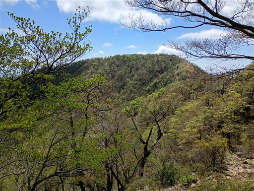
バイケイソウ。丹沢ではよく見かける。
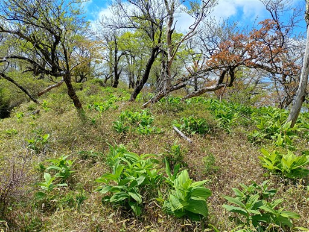
このトゲ植物も丹沢ではよく見かける。
うまく避けて歩かないと怪我をする。
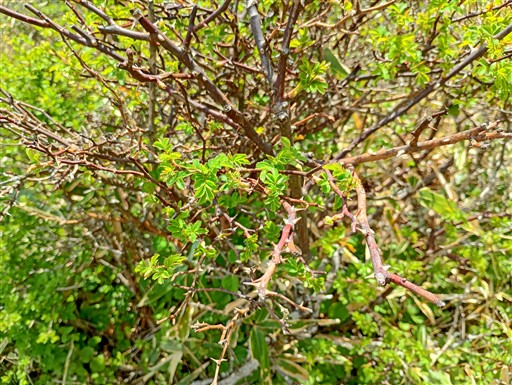
丹沢主脈に到着。
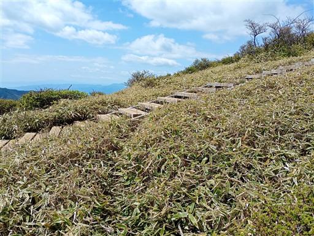
目の前には丹沢山。
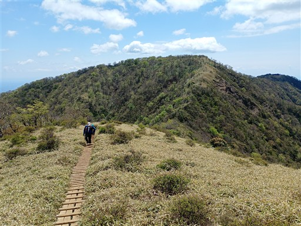
足は自然と逆方向の蛭ヶ岳に向いてしまう。
晴れの丹沢主脈。蛭ヶ岳まで歩いてみたい。
地図を見ると、案外遠いが、急げば1時間30分ほどで往復できそうだ。
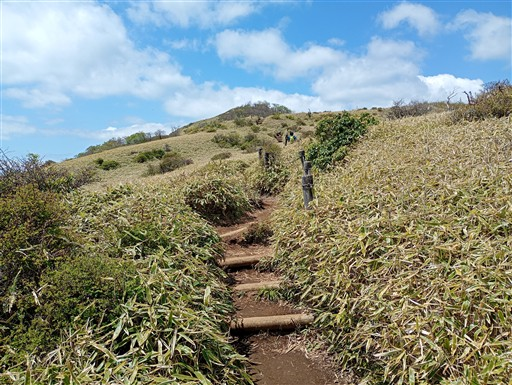
蛭ヶ岳に行ってみたい欲望には勝てず、往復することにする。
不動ノ峰休憩所。こんな立派な建物がいつの間にかできている。
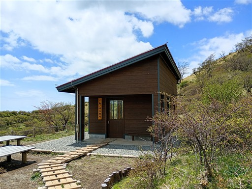
登山道はとてもよく整備されている。
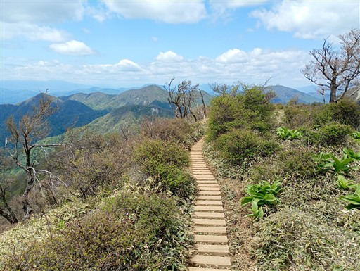
蛭ヶ岳が姿を現す。
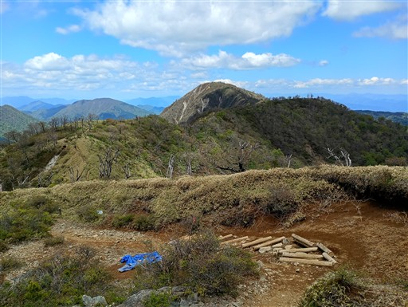
気持ちよすぎる登山道。
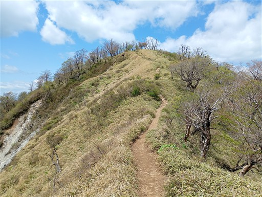
展望は非常に良い。箱根や愛鷹山が見えている。
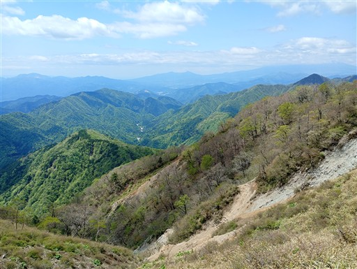
蛭ヶ岳が近づいてきた。とても存在感のある姿だ。
この道は過去2度歩いたことがあるが、晴れたことはなかった。念願の景色だ。
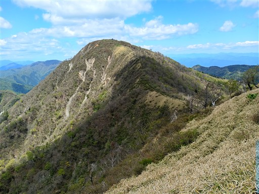
足元に咲くタンポポ。
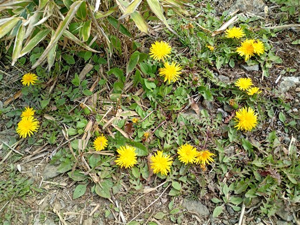
鬼ヶ岩ノ頭。
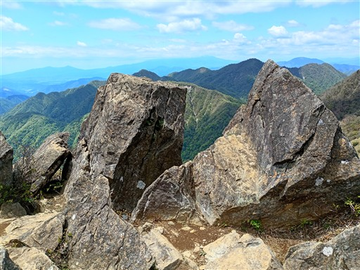
ここからはちょっとした岩場を下る。
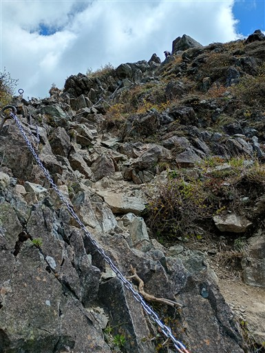
蛭ヶ岳山頂に到着。標高1673m。
富士山は残念ながら雲の中。
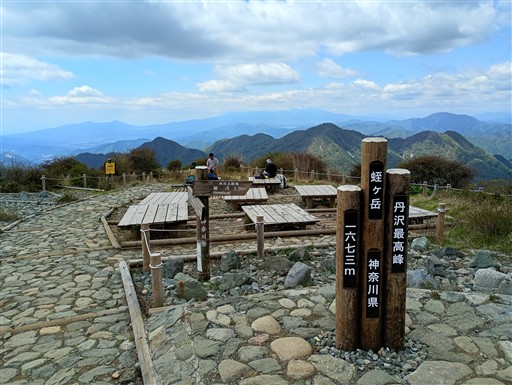
丹沢主脈。右端が塔ノ岳だ。
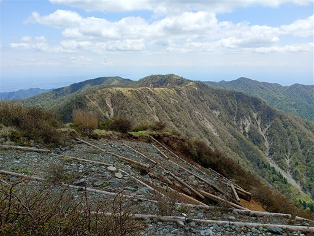
右手に見えているのは丹沢三峰。
今から丹沢山に戻った後、あの三山を超える必要がある。
山頂にある小さな祠。3度目の訪問だが、初めて気づいた。
小休止を取ったら出発する。
眼下に見えるのは玄倉川の支流、熊木沢。
歩いたら楽しそうな河原だ。
コイワザクラの花がところどころで咲いている。
桜はほぼ散ってしまっているが、若干残っている。風が吹くと花びらが舞う。
ツルシロカネソウ。
キジムシロの花もたくさん咲いている。
気持ちの良い尾根道が続く。
丹沢山～塔ノ岳の稜線。
分岐点まで戻ってくる。読み通り、ちょうど往復1時間30分だった。
「鎮魂」と書かれた石仏。誰かがここで亡くなったのだろうか？
こんな山小屋があるすぐそばで、何があったのか？
丹沢山に到着。標高1567m。
山頂は明るく開けているが、展望は広がらない。
山頂に建つみやま山荘。いつか泊まってみたい。
ここから丹沢三峰方面に向かって歩き出す。とたんに人影はなくなる。
折れた木の幹に生えた巨大キノコ。
木段の次のステップの切り株。みんなに踏まれて困った顔をしている。
テーブルのうえにあるファンタの空き缶。一体、いつからここにあるのだろう？
数十年前からここにあったとは思えないが…
緑の美しい道。丹沢にはこんな世界もあるのだと思わされる。
すれ違ったのは2組の登山者。みやま山荘泊だろうか？
落ち着いた道を歩く良いルートだ。
太礼ノ頭に到着。大して登った記憶は無いが、ひとまず一つ目のピーク。
立派なブナの木があちらこちらで見られる。
円山木ノ頭へは短いがしっかりとした登り。
足が疲労し始めている。
円山木ノ頭。二つ目のピーク。
左手に見えるのは、先ほどまでいた蛭ヶ岳。
下って登って、無名ノ頭に到着。
有名なのか無名なのかよく分からないピークだ。
ちょっとだけ痩せ尾根がある。
本日最後の登り。
本間ノ頭に到着。標高1345m。
本日最後のピークだ。
ここで登山道から外れて、北に伸びる尾根に入って行く。
踏み跡は薄いが、序盤は比較的歩きやすい尾根。
密集した樹林帯。
まっすぐ行く尾根にロープが張られている。ここで左折。
目的地によっては直進する人もいると思うが…
こんなところにも鹿柵がある。
かわいらしい標識。
トラロープが設置された急斜面の下り。
この辺りから難易度が上がってくる。
標識に導かれて尾根から外れて沢へ。
かなりの急斜面の下り。一応ロープが設置されている。
沢に下りてくる。
最後は植林地帯を突破。丸太や枝葉が地面に散乱していて超絶歩きにくい。
道も分かりにくく、最後はゴールを見据えて適当に歩く。
魚止め森の家に到着。かつては丹沢観光センターと呼ばれていたところだ。
すでに廃墟と思われる。
本間橋に出てくる。無事ゴール。あとは車道を歩くのみだ。
早戸大滝はしっかりと全体を見渡すことはできなかったが、チラッとだけでも見られて良かった。
早戸大滝までの道のりは険しかったが楽しく歩くことができたし、
おまけに丹沢山～蛭ヶ岳の稜線、行ってみたかった丹沢三峰も行けて充実した山行になった。